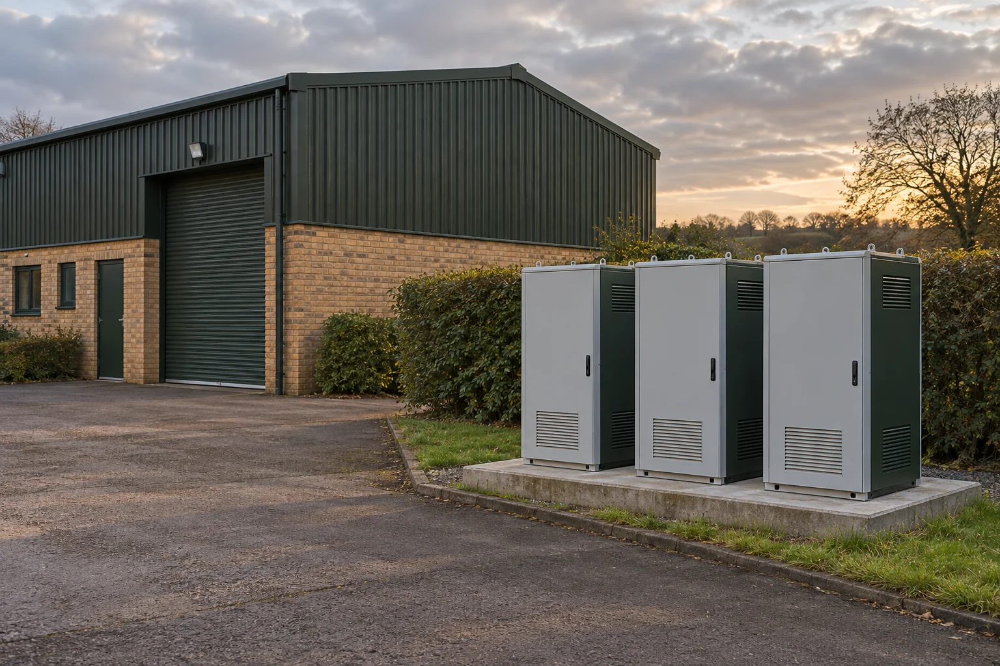
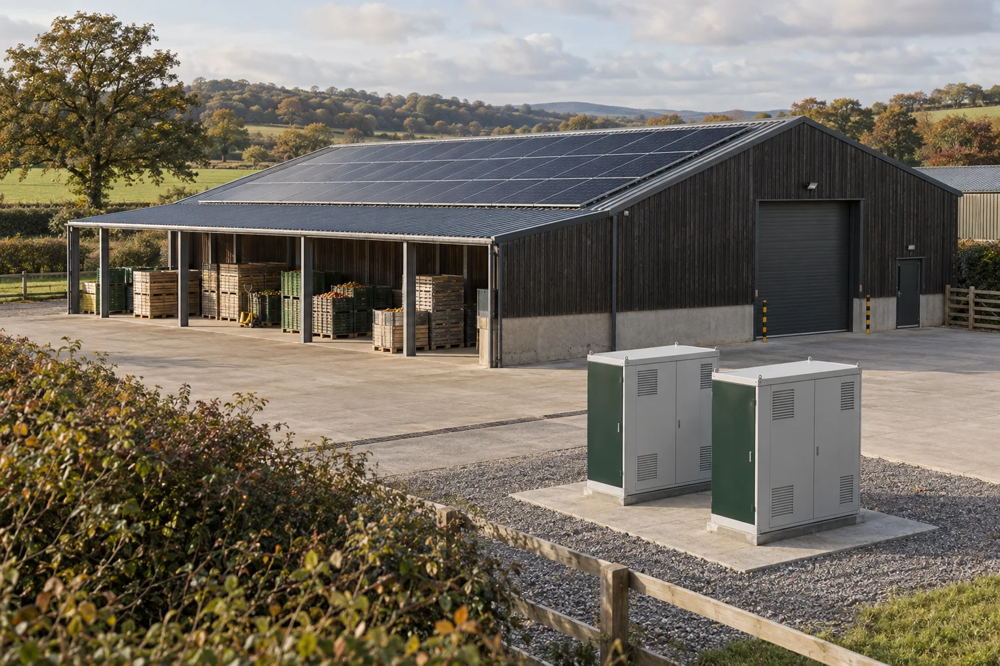

First, choose
the right question.
A storage project may have more than one purpose. Begin with the reason for considering it, then examine the site information and responsibilities that support that objective.
Understand the shape
of your working day.
Some operations run steadily; others change with shifts, jobs and late finishing. We examine your demand pattern and the proposed operating approach before considering a storage configuration.
What to bring to the assessment
- Interval usage data and the current supply information.
- Machine schedules, working hours and planned changes.
- A candidate equipment area and access constraints.
No bill saving or commercial return can be concluded from the shape of a building or a short form. Site data and the full operating assumptions need assessment.

Look at generation
and demand together.
For sites with existing or planned solar, the useful question is how generation and demand line up over time. A packhouse’s busy season may be very different from a quiet winter week.
What to bring to the assessment
- Generation records or the planned solar design assumptions.
- Usage data covering both busy and quieter periods.
- Existing equipment, supply arrangements and responsible contacts.
Storage capacity is not selected from roof size alone. This website does not estimate export values, tariff savings or a payback period.

Name the loads
that matter most.
Begin with the activities your team needs to maintain, who relies on them and how interruptions are handled today. A resilience assessment separates those priorities from a general storage discussion.
What to bring to the assessment
- An agreed list of essential loads and operational priorities.
- Existing continuity arrangements and the people responsible.
- Available electrical records and the proposed scope of specialist review.
Battery storage does not automatically provide backup power. Any proposed backup function needs separate engineering and verification; no outage duration or uninterrupted operation is promised here.

A few practical answers.
Can you name a battery size from this form?
No. The form organises preparation steps. A configuration depends on site information, the agreed operating objective, detailed engineering and the equipment considered during assessment.
Do you supply electricity or arrange investment products?
No. Bracken coordinates site assessment, installation delivery and aftercare. Electricity retail, financing and grid-services trading are outside our offer.
Can we start if the data is incomplete?
Yes. Start by identifying what is available, who can obtain the remaining information and who owns the site decisions. The preparation tool makes those gaps visible without claiming the site is suitable.
Tell us about the site.
Start with what you know.
A short preparation tool helps you organise the facts and see what still needs to be established.